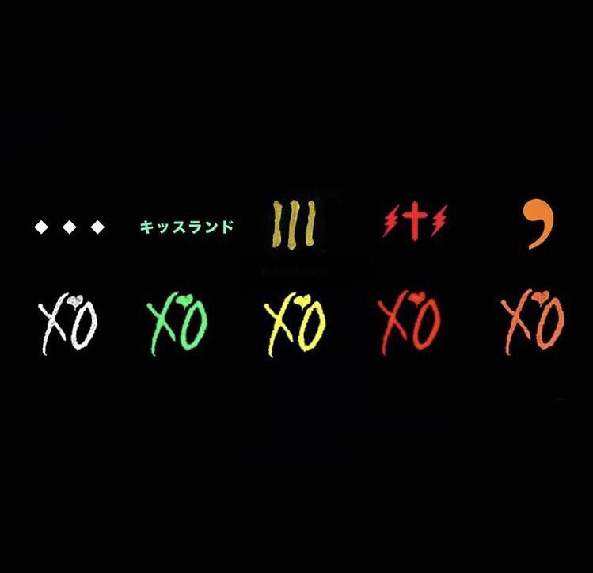

Instituto Politécnico Nacional
Escuela Superior de Cómputo
Datos Personales
Horario
Otra página
Datos Personales:

- Nombre: Castro Cruces Jorge Eduardo
- Fecha de nacimiento: 15 de diciembre de 1998
- Signo zodiacal: Sagitario
- Direccion: Ciudad De México
- Correo Electrónico: georgecastrocruces1515@gmail.com
- Twitter:
- Facebook: Eduardo Castro Cruces
- Instagram: eduardocastrocc
Hola, Bixby, ¿por qué el 8K es la resolución del futuro?
Bixby comenzó su andadura en los smartphones de Samsung.
Paulatinamente, la empresa coreana ha ido introduciendo el asistente en otras
familias de productos, como en el caso de los televisores Smart TV.
Bixby permite que nos comuniquemos con nuestros dispositivos a través de la
voz usando un lenguaje natural en vez de limitarnos a usar comandos aislados.
En el caso de los televisores, podemos hacer preguntas a Bixby acerca de las
películas que queramos ver, sobre cuándo ponen un determinado programa o
sobre datos de reparto, etcétera.
A través de Bixby, en la gama de televisores QLED 8K de 2019, podemos
incluso encender el televisor sin necesidad de usar el micrófono en el mando
a distancia One Remote, así como realizar cambios en los ajustes del dispositivo.
Desde hace unos meses, Bixby habla en español con fluidez, por lo que el idioma
no será un problema.
Además, Samsung, ha integrado en los modelos 2018 la compatibilidades con
otros asistetes cono Google Assitant o Amazon Alexa.
Situacion Académica:
- Nivel medio: Centro de Estudios Científicos y Tecnológicos #8 'Narciso Bassols'
- Promedio: 8.9
- Nivel superior: ESCOM
- Promedio Actual: 7.7
- Semestre: 4
Los discos de cuarzo 5D nos prometen 360 TB y una vida eterna:
cómo funciona y en qué estado está esta técnica de almacenamiento
Las primeras demostraciones experimentales de la tecnología de almacenamiento
óptico de datos en 5 dimensiones (5D) tuvieron lugar en 2010, en la Universidad
de Kioto (Japón), y 2013, en la Universidad de Southampton (Reino Unido).
Durante esta última demostración un grupo de investigadores especializados en
optoelectrónica, una disciplina que se encuentra a medio camino de la óptica y
la electrónica, logró almacenar un archivo de texto de 300 kbytes en un pequeño
cristal de cuarzo. Y, posteriormente, también consiguió recuperarlo.
Este logro puede no parecer gran cosa, pero, en realidad, solo era un primer paso
hacia algo más grande.
Muchos medios de comunicación, entre los que se encontraba Xataka,
se sorprendieron cuando pocos años después de aquellas primeras demostraciones
ese mismo grupo de investigadores británicos anunció que tenía preparada una
tecnología de almacenamiento que permitirá guardar hasta 360 TB de datos en
un disco con el mismo diámetro de un CD o un DVD, y que, además, tendría una
vida útil de nada menos que 13.800 millones de años.
Otros datos:

- Pasatiempos: Fotografía y calistecnia
- Materia favorita: Tecnologías para la web
- Materia que me desagrada: Bases de datos
- Canción favorita: Tu orgullo
- Película favorita: As above so below
En qué estado actual se encuentra la computación cuántica y
qué podemos esperar
No es sencillo ubicar con precisión en el tiempo el momento exacto en el
que la computación cuántica comenzó a hacer ruido más allá de los ámbitos
académico y de investigación. Quizá lo más razonable es aceptar que esta
disciplina empezó a ser conocida por el gran público hace aproximadamente
dos décadas, un período durante el que los ordenadores clásicos han
experimentado un desarrollo muy notable.
Aunque hay científicos que defienden con cierta vehemencia que la
computación cuántica a la que aspiramos es imposible, como Gil Kalai,
un matemático israelí que da clase en la Universidad de Yale, lo cierto
es que ha avanzado mucho durante los últimos años. Desde fuera puede
parecer que es una «eterna promesa» más, pero los avances de los que
estamos siendo testigos, como la construcción del primer prototipo
funcional de 50 qubits en el que está trabajando IBM, nos invitan a ser
razonablemente optimistas. Sí, los retos que tienen por delante matemáticos,
físicos e ingenieros son casi titánicos, pero esto hace si cabe más apasionante
esta disciplina. Comencemos nuestro viaje.

- Elaborado por: Castro Cruces Jorge Eduardo
- Fecha: 27 de agosto de 2019
- Lugar: Laboratorio 1105